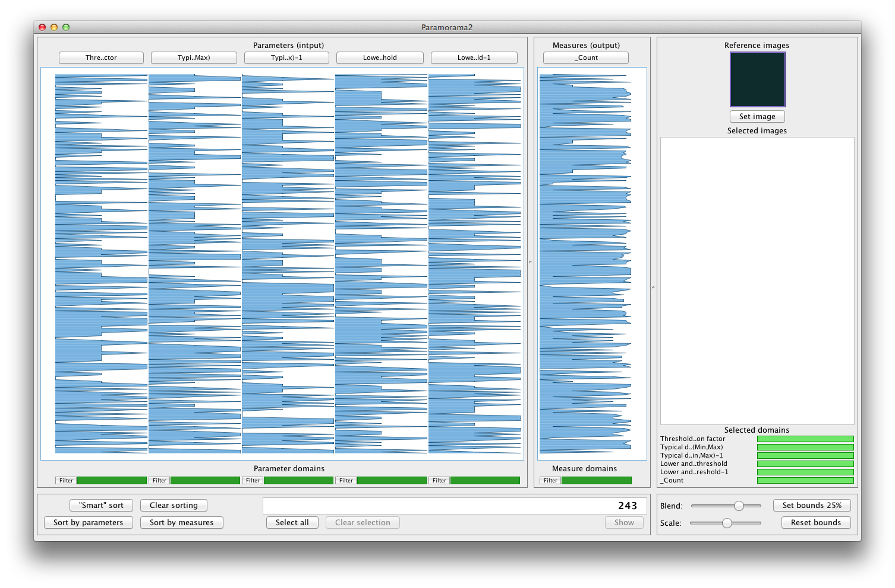
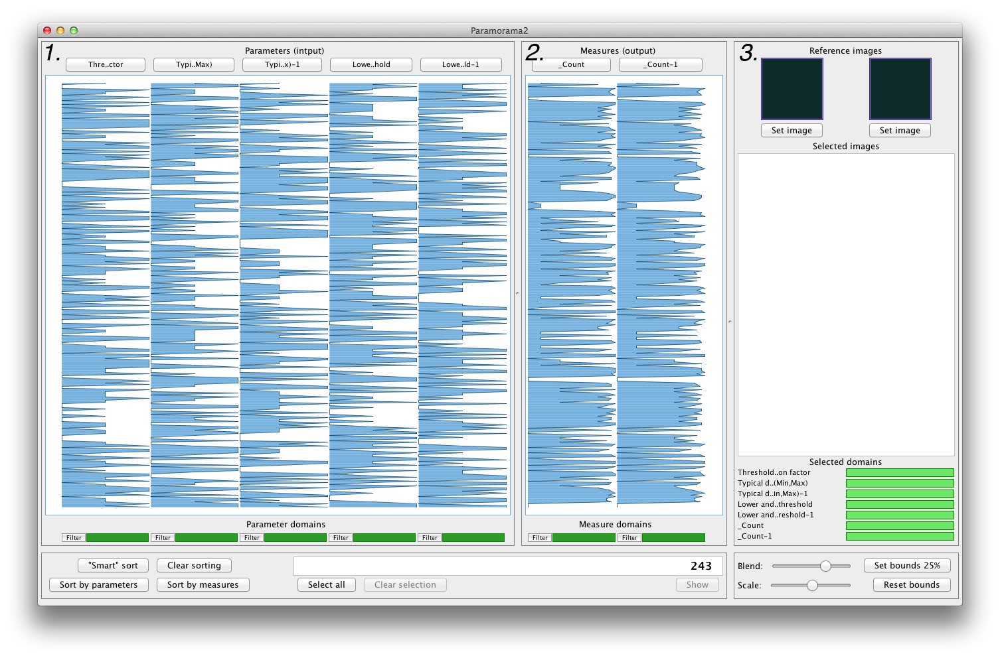
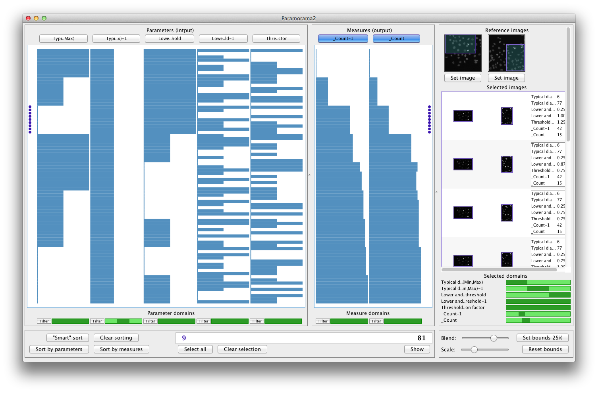

Introduction | Getting started | Sorting | Filtering | Selection | Download | Contact
After you have extracted the sample data set (available here) in a target directory, you should have the following directory structure:
ExampleHumanImages [directory]
3x3x3x3x3_1+count [directory]
3x3x3x3x3_1.tsv
NucOutlines_0.jpg
...
3x3x3x3x3_2+count [directory]
3x3x3x3x3_2.tsv
NucOutlines_0.jpg
...
session.xml
session2.xml
workspace.xml
This data set represents the results of an image segmentation algorithm applied to two different input images (photomicrographs of human osteosarcoma cells, courtesy of the Imaging Platform, Broad Institute of MIT and Harvard). The objective here was for the algorithm to accurately detect all cells that do not touch the boundaries of the original input images.
To load a data file, select
File > Open data file
from the menu bar. Navigate to "3x3x3x3x3_1.tsv" and open it. You should see something resembling the following image (the details will be explained shortly):

In Paramorama 2, every row in the data file is represented by a row that spans across several columns (see the previous part of this tutorial for more on data files). The columns at the left of the interface represent parameters, the columns at the right represent output measures. For each row in the data file, the values that it takes for parameters and output measures is encoded by the length of a bar where it intersects the corresponding column (measured from the left). As you will see shortly, this visual encoding allows us to identify correlations between parameters and output measures.
It is possible to open several data sets in Paramorama 2. This is useful when you are interested in the results of the same algorithm on different input images. However, for this to work the file to be added must have identical combinations of sampled input parameter values to the first data file. You can add an arbitrary number of additional data files (as long as their parameter values match). To add another data file, select
File > Add data file
from the menu bar. Navigate to and select "3x3x3x3x3_2.tsv". The user interface (UI) should resemble the following image:

Note that:
Once you have loaded a number of data files, your workspace can be saved by selecting
File > Save workspace
from the menu bar. A workspace keeps references to multiple individual data files (and assumes they are in the location they were originally opened from). In the future you can simply load this workspace instead of opening each data file separately. This can be achieved by selecting
File > Load workspace
from the menu bar. To see how this works, navigate to and open "workspace.xml". You should see exactly what you had before: this workspace file loaded both "3x3x3x3x3_1.tsv" and "3x3x3x3x3_2.tsv" in one step.
Finally, it is also possible to load and save sessions. A session stores the state of the analysis interface, including filters applied, selections made, and much more. To save the current state as a session, select
File > Save session
and to load a session, select
File > Load session
from the menu bar. Navigate to and select "session.xml". You should see a dramatic change to the UI, which should now resemble the following screen capture:

Note that a session is associated with a particular workspace. Attempting to load a session that does not match the current workspace will generate an error message.
As will become clear, it is useful to compare the output images generated by an image analysis algorithm to the original input images. The session that was just loaded has two reference images associated with the data (top right of UI). Here, the first corresponds to the first data set, "3x3x3x3x3_1.tsv", and the second refers to the second data set, "3x3x3x3x3_2.tsv". (These images were originally added by clicking on the "Set image" buttons directly below them.)
(c) Copyright 2012, A.J. Pretorius. All rights reserved.